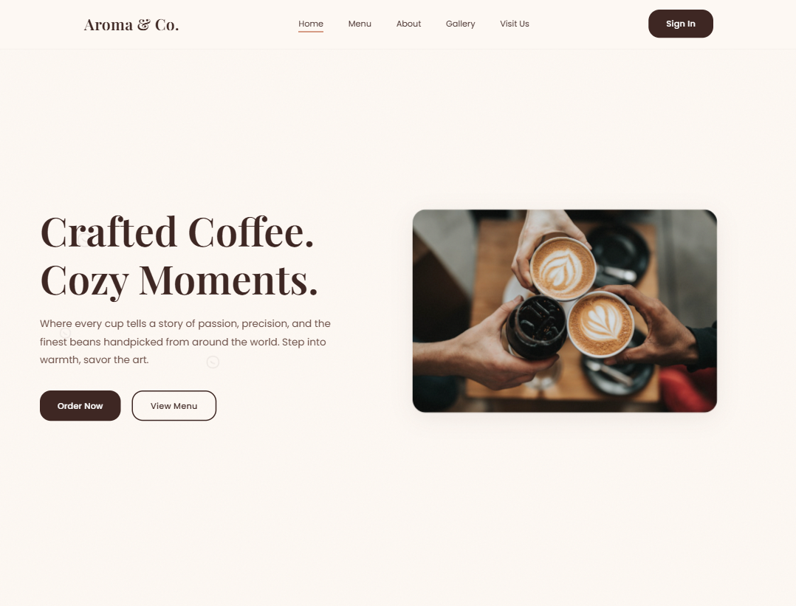
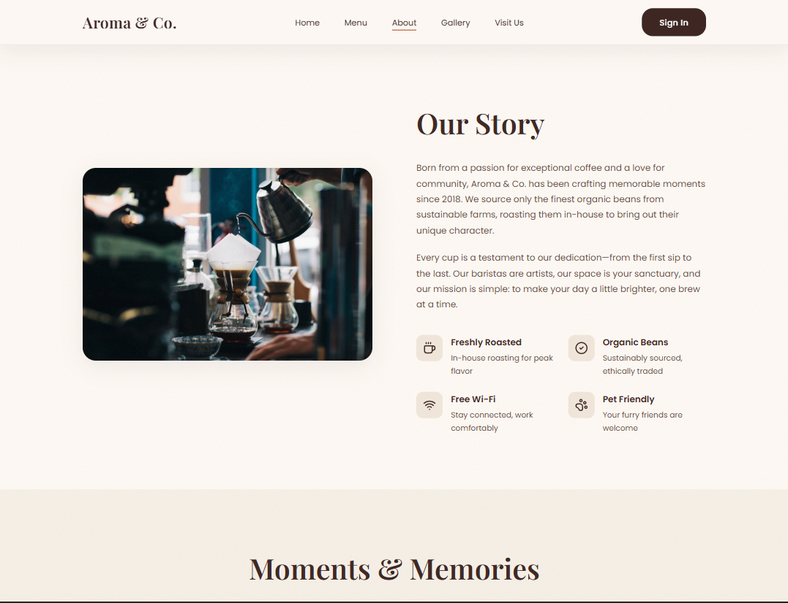
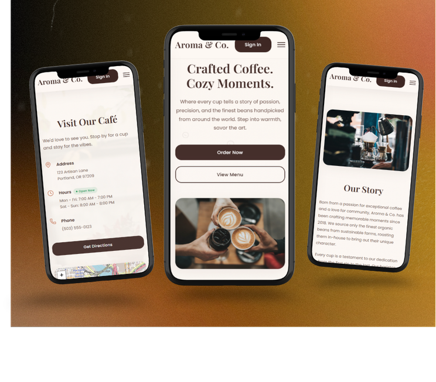

Aroma & Co needed more than a pretty café website — they needed a full-stack platform that could handle real data. A public-facing site that showcased their menu and brand personality, backed by a management dashboard connected to a live Supabase database.
Industry
Food & Beverage — Café & Restaurant
Project Type
Full-Stack Web Application — Design & Development
Timeline
Design to deployment, iterative build process
Deliverables
Public website · Menu showcase · Management dashboard · Supabase backend · Live deployment
The main challenge was integrating Supabase as the backend — setting up database tables, configuring authentication, and connecting real-time data to the frontend without breaking the visual experience.
The management dashboard required careful UX thinking: café staff needed to be able to update menu items, view orders, and manage content without any technical knowledge.
Every backend decision had to be matched with a frontend that made the data feel alive — not like a spreadsheet, but like a natural extension of the brand.
A visually rich menu section that presents food and drink items with images, descriptions, and categories — designed to make every item look as good as it tastes.
A clean admin dashboard for café staff to manage menu items, view data, and update content in real time — no technical knowledge required.
Full Supabase integration — database tables, authentication, and real-time data syncing between the dashboard and the public-facing site.
Both the public site and the dashboard are fully responsive — designed to work smoothly on mobile, tablet, and desktop for staff and customers alike.
Key screens from Aroma & Co — hero, menu, and management dashboard.

Hero Section
About Section
Mobile VersionEstablished a warm, rich visual identity for Aroma & Co — deep browns, amber tones, and editorial typography that communicated the café's personality. Designed the public site to feel like a lifestyle brand, not just a menu listing.
Set up the Supabase project — designed the database schema for menu items, categories, and orders. Configured row-level security and authentication so the dashboard was protected while the public site remained open.
Built the management dashboard with a focus on simplicity — staff needed to add, edit, and remove menu items without confusion. Connected all dashboard actions to Supabase in real time so changes reflected immediately on the public site.
Designed the menu showcase to lead with visuals — large food photography, clean category filters, and smooth transitions. Refined all breakpoints for mobile so the browsing experience felt as polished on a phone as on desktop.
A full-stack setup combining a modern frontend framework with a powerful backend-as-a-service.
A full-stack café platform — public-facing site with menu showcase and a live management dashboard powered by Supabase.
Visit the deployed project or go back to the full portfolio.